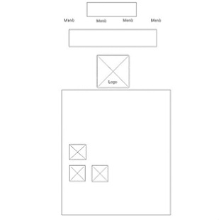
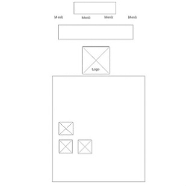

About Sede Wireless 2.0
Sede wireless 2.0 vuole essere quel collegamento tra individui che vivono le stesse emozioni e situazioni da città diverse.
I sentimenti non hanno età, come il pubblico che vuole chiamare; non solo universitari, ma anche donne e uomini che sono fuori sede per lavoro.
Nasce dal bisogno di ogni fuori sede di risentirsi a casa, solo per un po', senza pretese.
Una rete sociale che non rimane solo un portale, ma permette di incontrare compaesani che magari non si sapeva essere dietro l'angolo.
Project Management Plann
banchmarketing
1)Obiettivi:
- far sentire a casa
- mettere in contatto i singoli
- esprimere pensieri su argomenti d'interessare per il target;
- fare conoscere angoli del nostro Paese che solo chi è del posto sa
2)Target Utente:
Chiunque si trovi lontano dal proprio paese natale per motivi di studio o lavoro
3)Competitors:
-Studentifuori.it: blog con diversi articoli riguardanti ricette, luoghi da frequentare e trucchi per agevolare la vita dei fuori sede di diverse città; vuole fornire "un manuale di sopravvivenza".
PRO: la suddivisione per città, i tanti articoli su diversi temi, la presenza sui social.
CONTRO: non favorisce la conscenza tra i vari lettori del sito.
-Fuorisede.info: portale di ricerca che, a seconda della città inserita, fornisce diversi links di associazioni ecclesiastiche, allogi e rimanda alle offerte formative del luogo.
PRO: Fornisce informazioni utili;
CONTRO: Non fornisce contenuti che invoglino il lettore a sostare sulla piattaforma e le presenti sono riscontrabili già su portali di informazione più conosciuti.
-Casasurace.com: portale che fornisce video tratti da esperienze di vita comuni dei fuori sede dal sud
PRO: ampia presenza sui social, stile comunicativo leggero, diffusione di prodotti propri.
CONTRO: la loro community non interagisce se non sui portali social.
Struttura e Layout
Architettura del sito

Wiraframe
Home & About
 

Look and Feel
Colori: caldi, che richiamano l'idea del sud;
Font:
Immagini: scelte per sottolineare le diverse sfaccettature di "casa": cibo, luoghi cari e belli e strade comuni.
Linguaggi e strumenti
1.Linguaggi: html5, css3, template creato da zero.
2.Strumenti:
-Padlet.com: forum
-Canva e Logomaker: logo
-Mockups: architettura sito e wireframe
-Google fonts: fonts
-Font Awesome: icone
-W3school: colori
-Github: pubblicazione